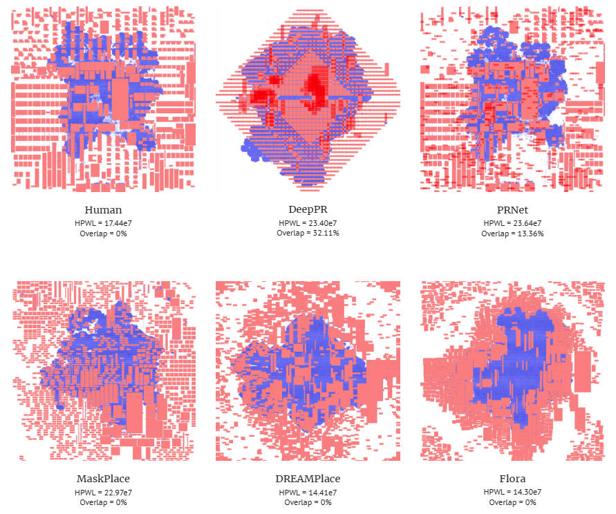
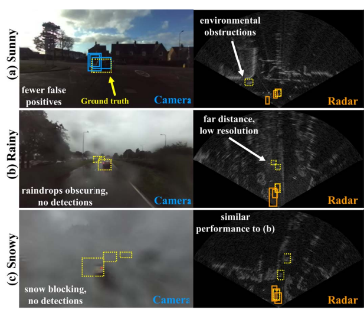
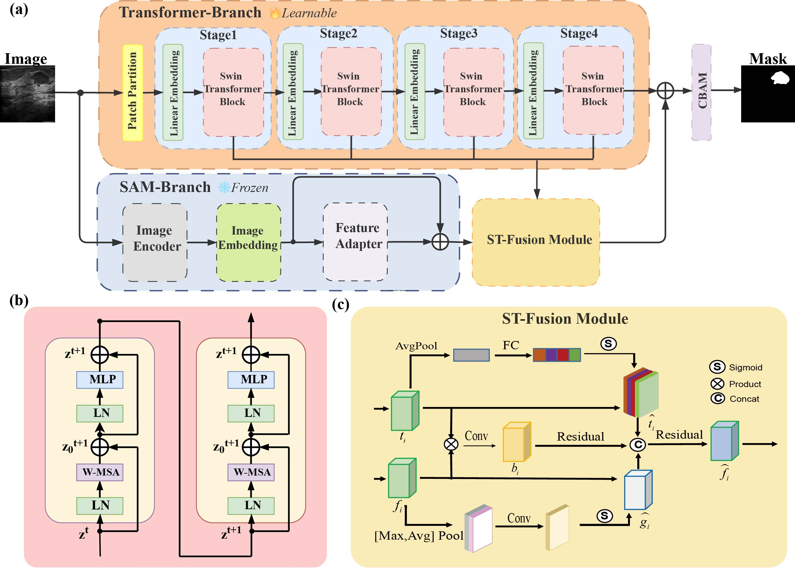
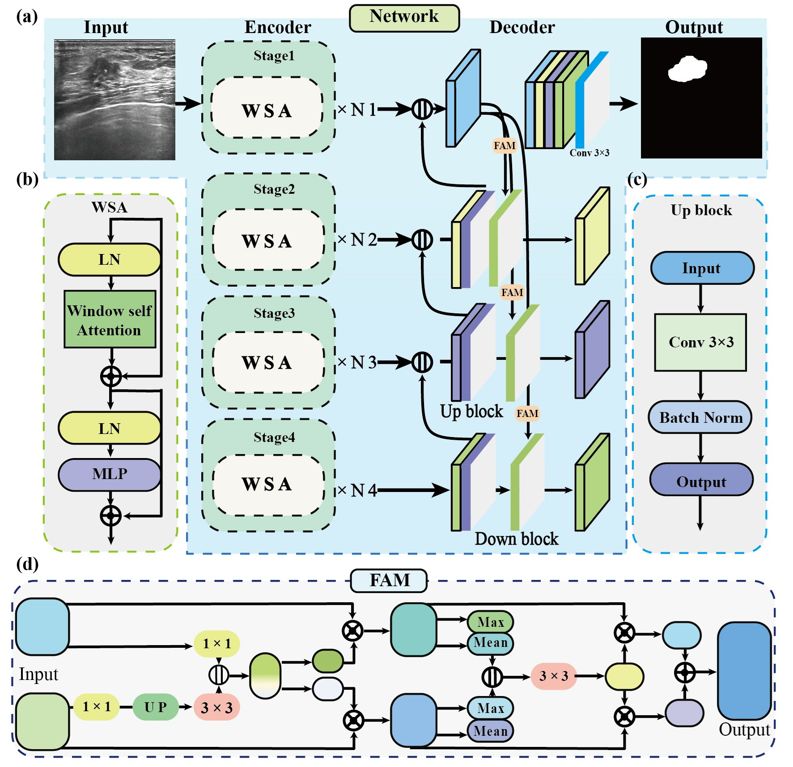
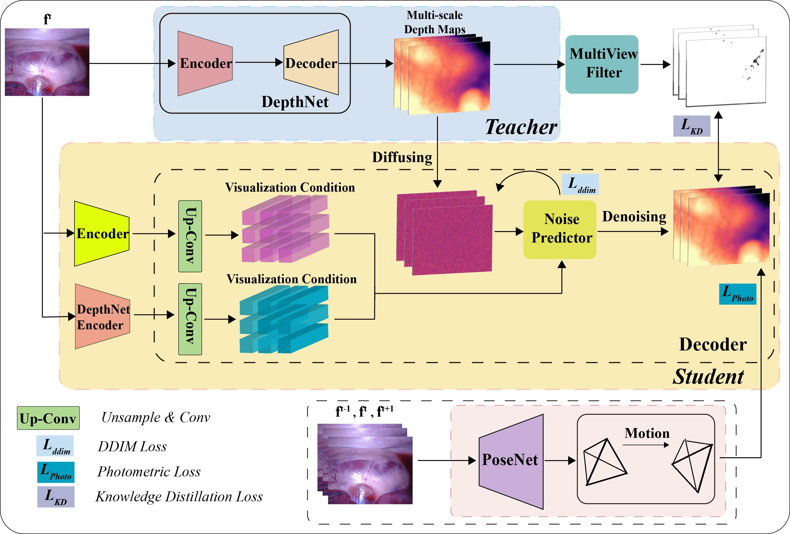
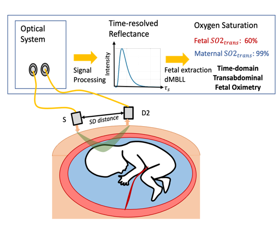
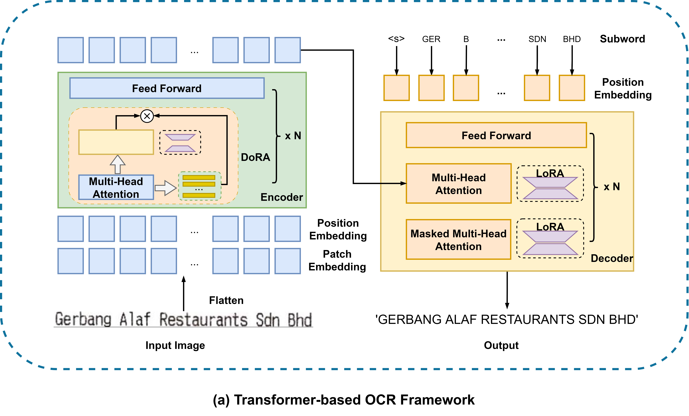
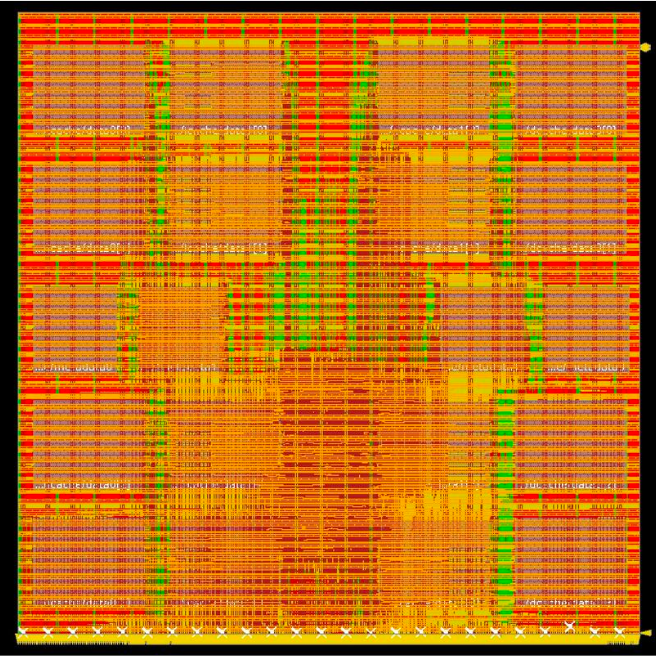
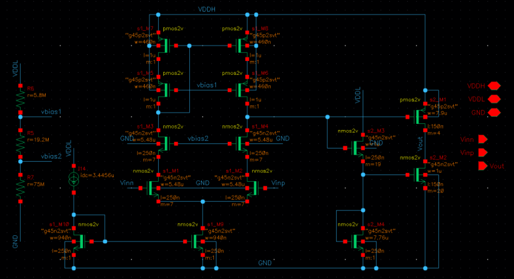

Yu(Jaray) Li 李煜Senior Student [Github] [Linkedin] [CV] [Transcripts] |
Biography
I am currently a senior in Hongyi Honor College of Wuhan University, majoring in Microelectronics Science and Engineering.
I have a certain understanding of digital/analog circuits and computer architecture. My current main research direction is the application of AI in vision, including LLM/VLM research.
Recent News
[08/2024] I am looking for a PhD position for Fall 2025, hoping to continue exploring practical applications of ML and VLM and on-device deployment.
[08/2024] Our independent research on methods for fine-tuning LLM parameters in OCR methods was accepted by ICONIP 2024.
[05/2024] I will join AICPS at UC Irvine as a research intern, during summer 2024.
[05/2024] I was awarded the Innova International Exchange Scholarship, thanks to Dr. Charles Huang and Charles Huang Foundation!
Research
My research focuses on ML&AI application, including improvement of LVLM/VLM, application in medical/healthcare field and integration with EDA.
|  |
Chip placement method based on visual representation and reinforcement learning
|
|  |
Sensor Fusion for Robust and Efficient Autonomous Vehicle Perception
|
|  |
[Code]
We leveraged the rich semantic segmentation information of SAM and applied its fine-grained attention capability to the feature extraction module of Transformer, achieving SOTA IoU scores in ultrasound image segmentation. |
|  |
[Code]
We explored the self-attention guidance mechanism of the Swin-Transformer structure in breast ultrasound images, used a multi-level encoder to deal with multi-dimensional features, and used spatial pyramid pooling and feature stream alignment to fuse shallow and deep information. |
|  |
[Code]
For endoscope medical scenarios, we use the diffusion model for depth estimation. We build a teacher model, set knowledge distillation, optical appearance and ddim losses, and introduce the teacher's discriminative prior, which significantly enhances the accuracy and confidence of the results. |
|  |
[Code]
We used the modified Beer-Lambert law for reverse deduction, used Monte Carlo simulation data to improve the SpO2 measurement process model and design algorithms, and finally realized the reverse model for determining physiological parameters from simulation data. |
Projects
Individual or Collaborative Projects
|  |
We explored the optimization of various full-parameter fine-tuning methods such as LoRA in LLM. For OCR, a hybrid visual-text model, corresponding to the Transformer architecture, DoRA and LoRA have good improvement effects on the visual encoder and text decoder respectively. |
|  |
In the first phase (front-end), I design and implement a 3-stage RISC-V processor in Verilog, and run simulations to test for functionality. Then in the second phase (back-end), I implement front-end design in the SKY130 PDK using the VLSI tools. |
|  |
To use a series resistance of 400 Ohms and a capacitance of 60 pF to design the LCD amplifier to the specifications. |

|
We developed a multi-channel video acquisition system with hardware acceleration on the Unisoc FPGA. We configured the YoLoV5 model on the host computer, collected video input via HDMI transmission, onboard DDR video frame buffer, and output via PCIE. The FPGA acceleration was achieved using several techniques: 1) optimized precision conversion, 2) pipeline strategy, 3) multi-channel and addition structure, and 4) DDR5 partition data sharing. |
Education
B.Eng., Hongyi Honor College, Wuhan University, Aug/2021 - Jun/2025
Experience
- Research Intern, UC Irvine, Summer 2024.
- Visiting Student, UC Berkeley, Spring 2024.
- Research Intern, UC Davis, 2023-2024.
- Research Assistant, WHU, 2022-2024.
Honors and Awards
| Innova International Exchange Scholarship, | Wuhan University, | 2024 |
| Innova Excellence Scholarship (Top 3%), | Wuhan University, | 2023,2024 |
| Academic Excellence Scholarship (Top 5%), | Hongyi Honor College, | 2022,2023,2024 |
| First-Class Scholarship (Top 5%), | Wuhan University, | 2022,2023,2024 |
Misc
| Patent: Energy-saving calculation method, | CN116085952. |
Skills
Languages: Python, C/C++, Verilog, MATLAB, LaTex
Tools : PyTorch, Tensorflow, Vivado, Cadence, VCS